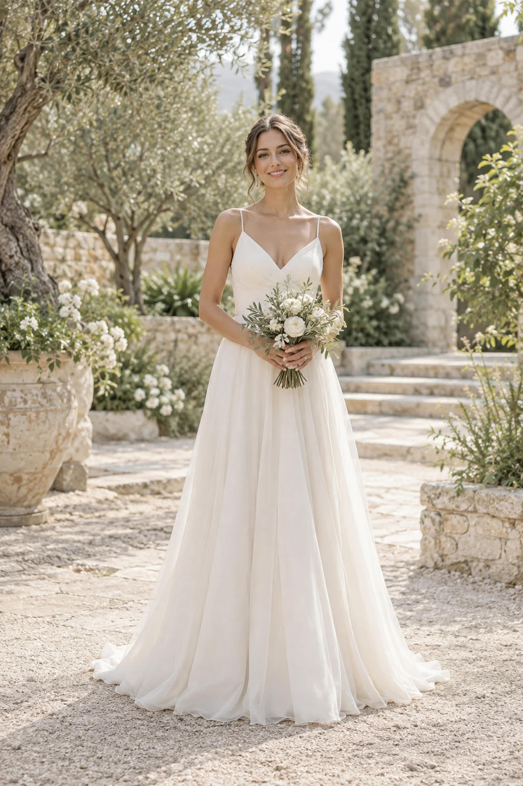
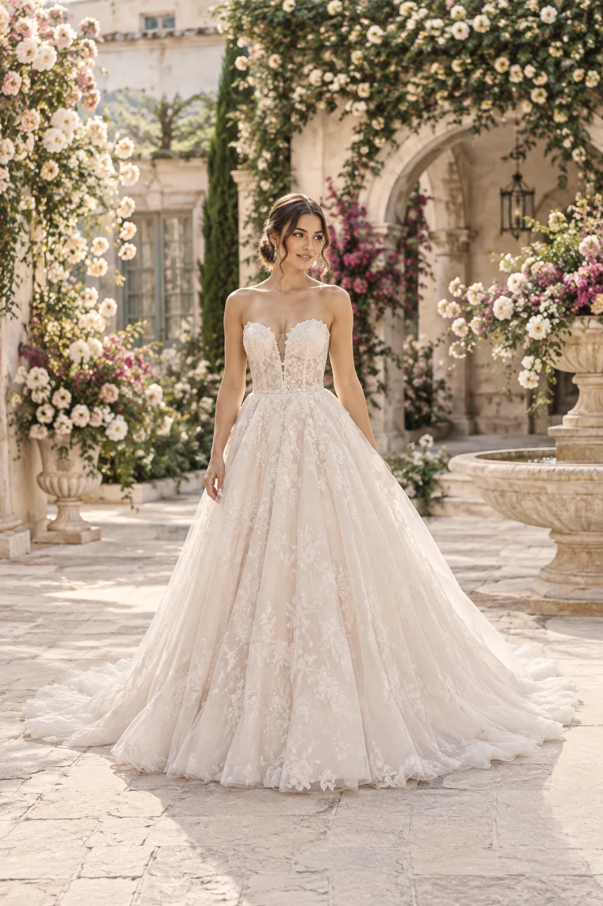
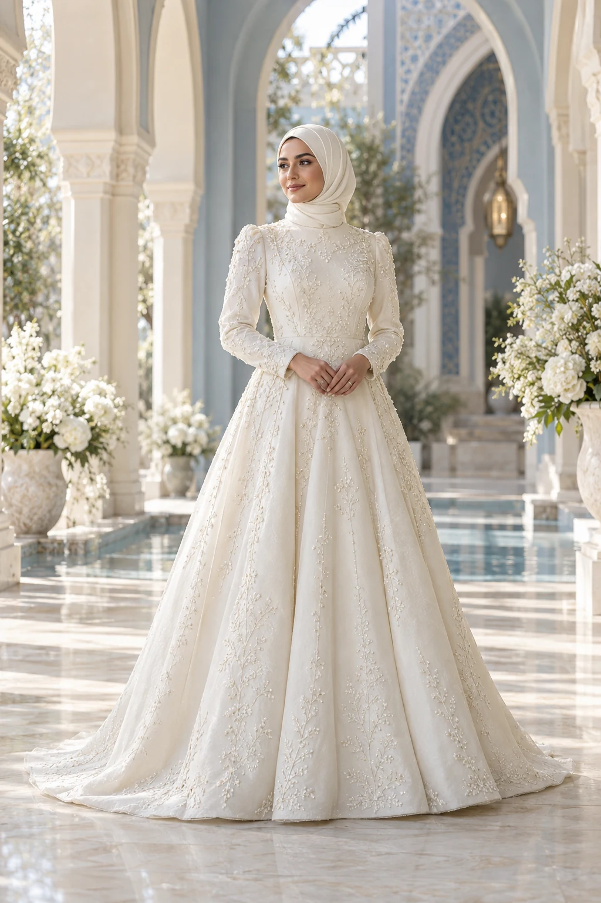
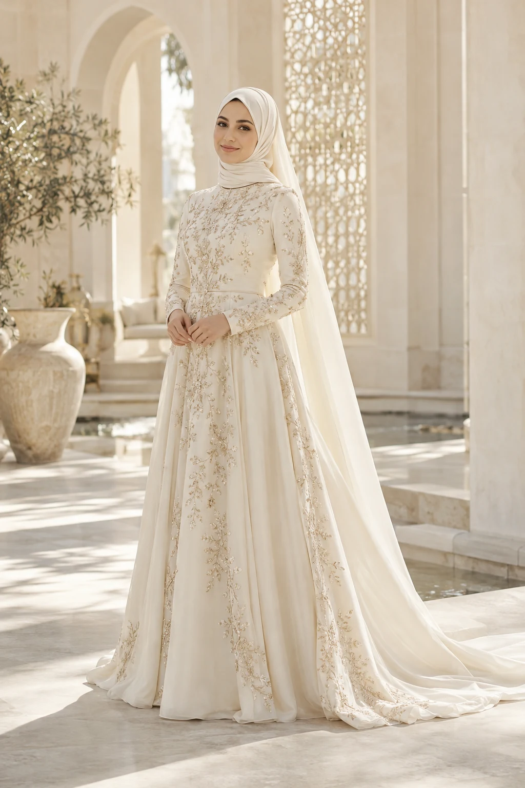
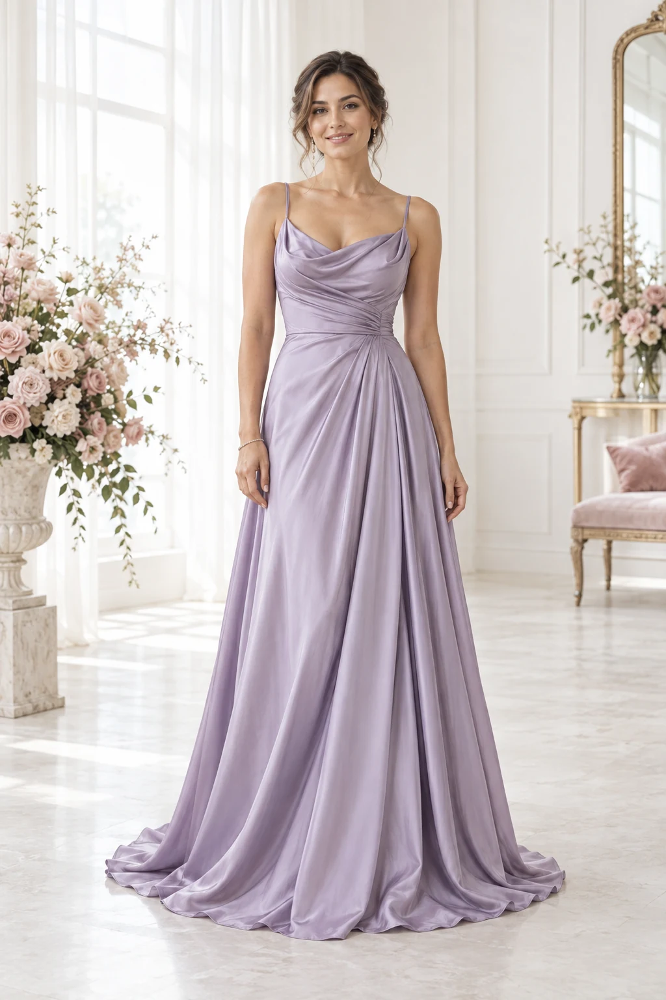
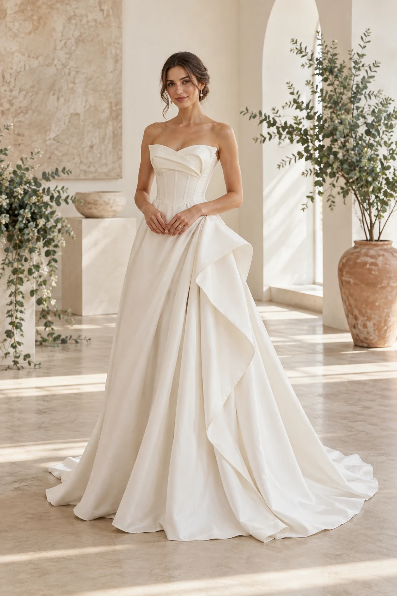
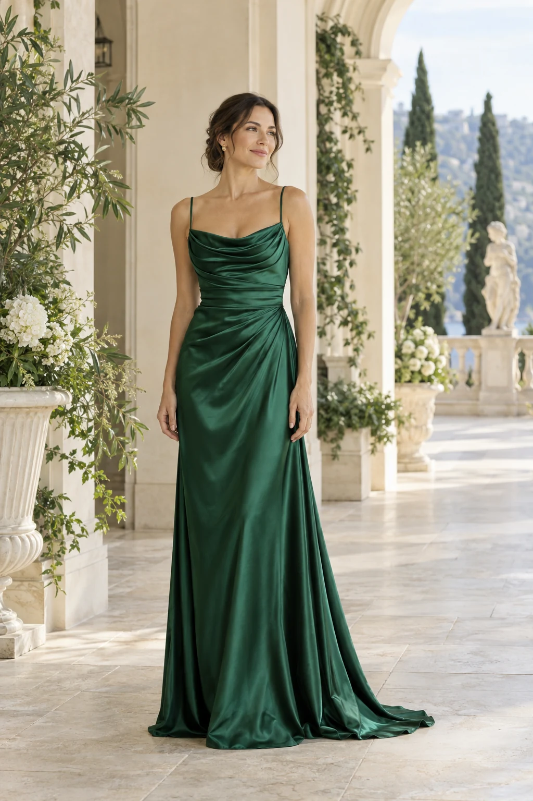
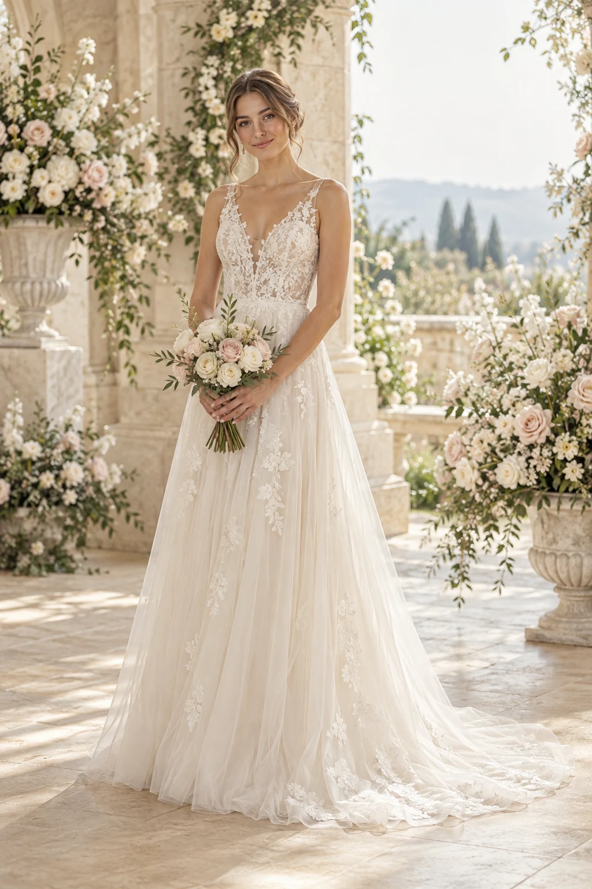
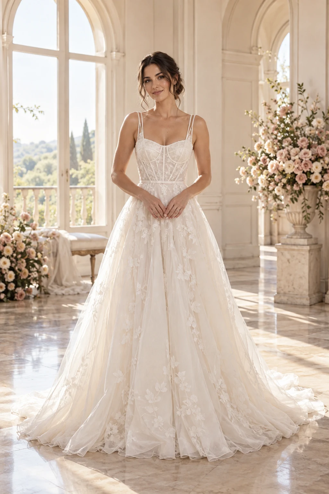

01Казань · свадебное пространствоМирэль
Габдуллы Тукая, 2То самое платье. Время для себя.
Размеры 40–58 · покупка и прокат
Компания ↗Свадебная и вечерняя мода, образы для никаха, авторское ателье и прокат. У каждого пространства — свой характер, три визуальные истории и удобный следующий шаг.
Показано 10 из 10

01Казань · свадебное пространствоТо самое платье. Время для себя.
Размеры 40–58 · покупка и прокат
Компания ↗
02Казань · свадебный салонКрасота по вашим правилам.
Размеры 36–64 · отдельный прокат
Компания ↗
03Казань · Уфа · бутик-ательеИскусство особенного образа.
Наряды на никах · индивидуальный пошив
Компания ↗
04Казань · Альметьевск · никахТрадиция и ваше настроение.
Своё производство · продажа и аренда
Компания ↗ 05Казань · платья на никах и для гостей
05Казань · платья на никах и для гостейКрасиво быть собой.
Размеры 38–58 · ежедневно без записи
Компания ↗
06Казань · вечерняя модаПусть вечер будет вашим.
Покупка и аренда · полный образ
Компания ↗
07Казань · салон и ательеВаш характер. Ваши линии.
Готовые платья · пошив · обучение
Компания ↗
08Казань · dress & partyХрани впечатления своего вечера.
Размеры 38–60 · аренда и фотопроекты
Компания ↗
09Казань · свадебный салонНежность вашего большого дня.
Покупка и прокат · детали образа
Компания ↗
10Саранск · авторский салон-ательеПлатье с вашим характером.
Своё производство · 400+ моделей
Компания ↗Ничего не найдено. Попробуйте другое название или сбросьте фильтр.